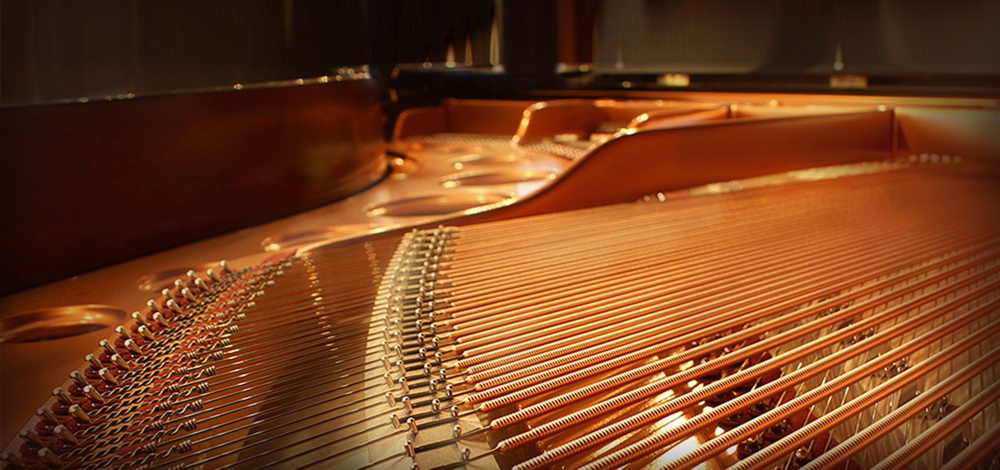
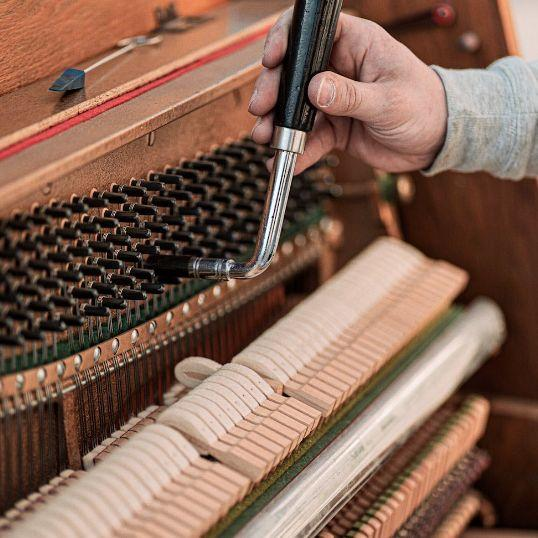
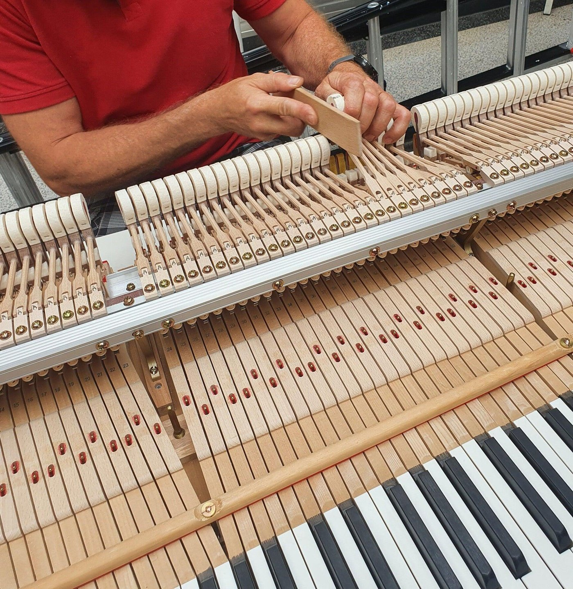
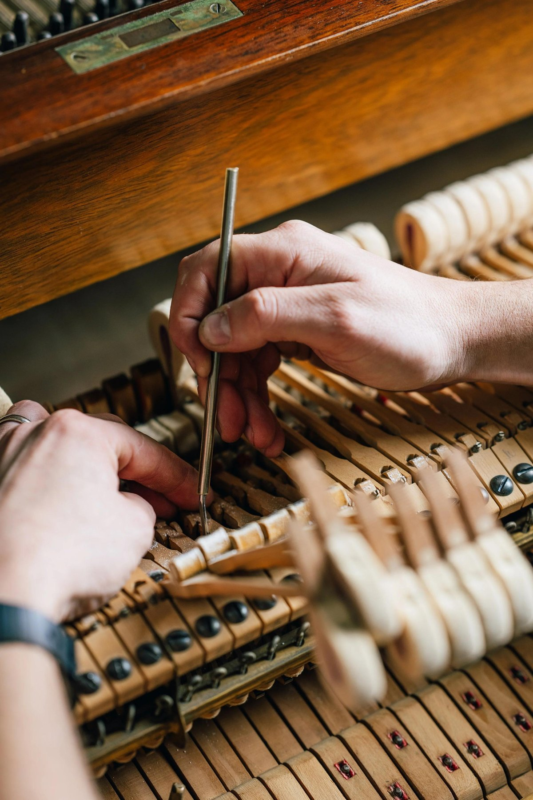
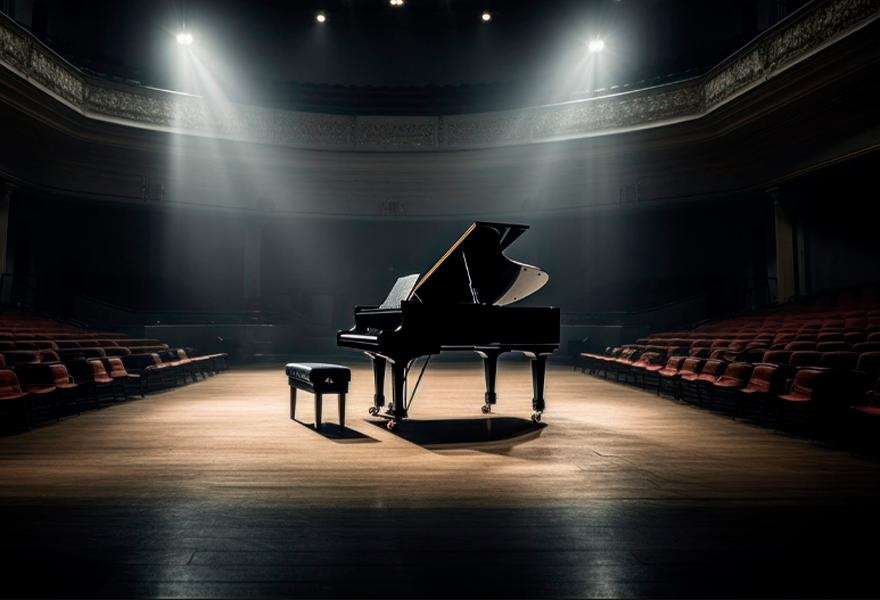
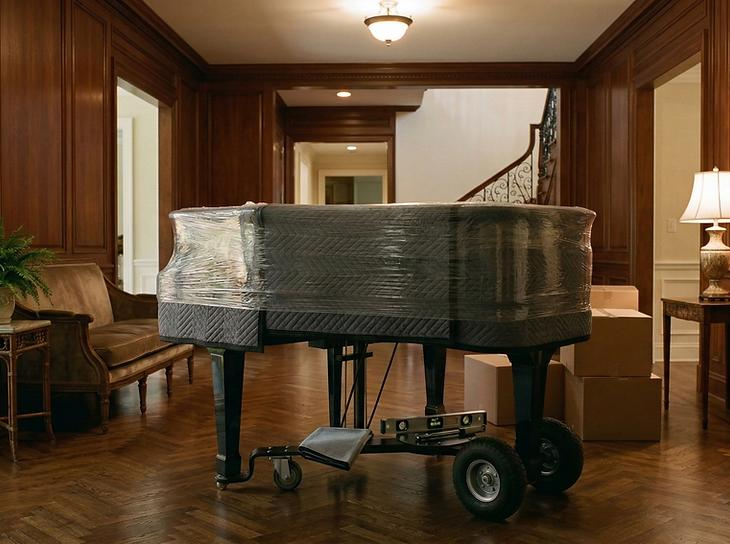
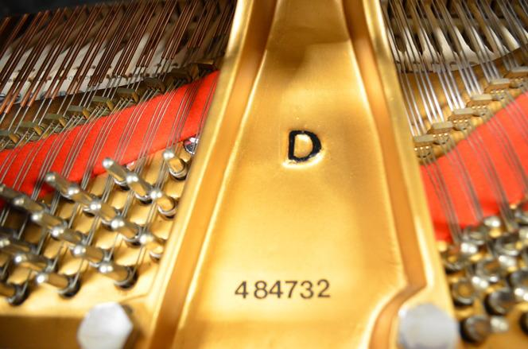
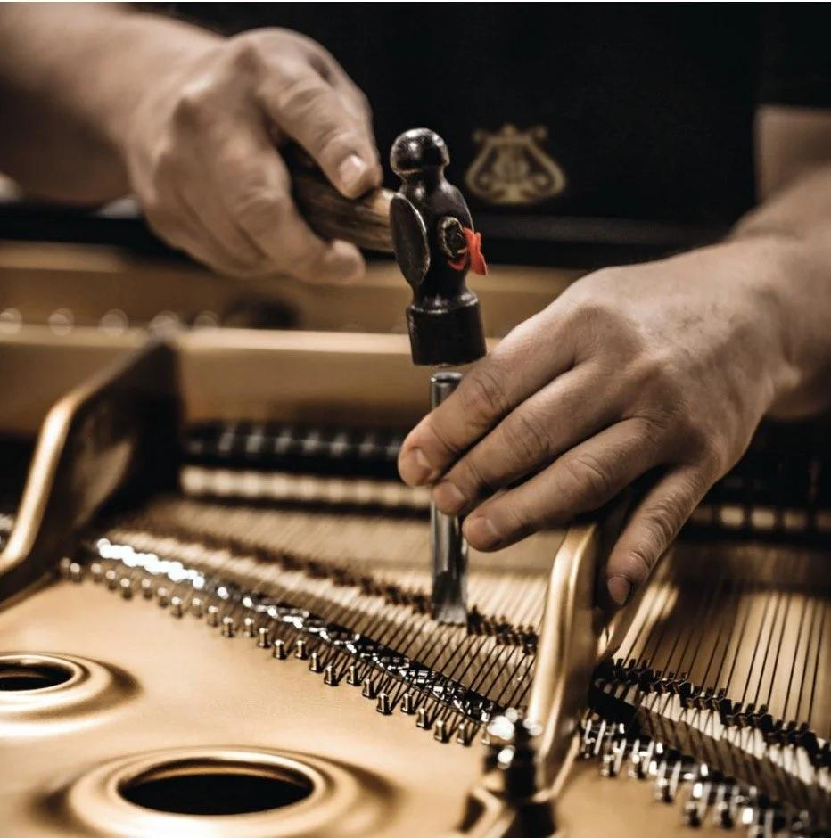

Οι υπηρεσίες μας
Η φροντίδα πίσω από κάθε ήχο.
Η γνώση και η εμπειρία που συνοδεύουν κάθε πιάνο, από το πρώτο χόρδισμα μέχρι την εξειδικευμένη τεχνική φροντίδα.

Εξειδικευμένη φροντίδα
Κάθε πιάνο αξίζει την κατάλληλη φροντίδα.
-

Χόρδισμα πιάνου
Το σωστό χόρδισμα αποτελεί τη βάση για την ποιότητα και την ισορροπία του ήχου. Με γνώση της κατασκευής και των ιδιαίτερων χαρακτηριστικών κάθε οργάνου, η φροντίδα του πιάνου γίνεται με προσοχή στη λεπτομέρεια.
-

Συντήρηση & ρύθμιση
Η συστηματική συντήρηση και η προσεγμένη ρύθμιση του μηχανισμού συμβάλλουν στη σωστή λειτουργία και την απόκριση του πιάνου. Κάθε παρέμβαση προσαρμόζεται στις ανάγκες και την κατάσταση του οργάνου.
-

Επισκευές πιάνων
Από μικρές δυσλειτουργίες έως πιο απαιτητικές τεχνικές εργασίες, η επισκευή ενός πιάνου απαιτεί εμπειρία και κατανόηση του μηχανισμού του. Στόχος είναι η αξιόπιστη λειτουργία και η διατήρηση των ιδιαίτερων χαρακτηριστικών του.
-
Ενοικίαση πιάνου
Η ενοικίαση προσφέρει μια ευέλικτη επιλογή για διαφορετικές μουσικές ανάγκες. Ο Οίκος Nikotian παρέχει ενημέρωση και καθοδήγηση για την επιλογή κατάλληλου οργάνου, ανάλογα με τη χρήση και τη διαθεσιμότητα.

-
Μεταφορά πιάνου
Η μεταφορά ενός πιάνου απαιτεί ιδιαίτερη προσοχή λόγω της κατασκευής, του βάρους και της ευαισθησίας του. Η κατάλληλη οργάνωση και ο προσεκτικός χειρισμός είναι απαραίτητα στοιχεία για την ασφαλή μετακίνησή του.

-
Εκτίμηση πιάνου
Η εκτίμηση ενός πιάνου βασίζεται στην κατασκευή, την κατάσταση, την ηλικία και τα τεχνικά χαρακτηριστικά του. Η εξειδικευμένη αξιολόγηση βοηθά στη διαμόρφωση μιας πιο ολοκληρωμένης εικόνας για το όργανο.


Η τέχνη της λεπτομέρειας
Κάθε λεπτομέρεια έχει σημασία.
Πίσω από τον ήχο ενός πιάνου βρίσκεται ένας πολύπλοκος μηχανισμός, όπου κάθε λεπτομέρεια επηρεάζει το τελικό αποτέλεσμα. Η τεχνική γνώση και η προσεκτική εργασία αποτελούν αναπόσπαστο μέρος της φιλοσοφίας του Οίκου Nikotian.
Επικοινωνία
Μιλήστε μας για το πιάνο σας.
Για πληροφορίες σχετικά με τις υπηρεσίες του Οίκου, η ομάδα της Nikotian είναι στη διάθεσή σας.